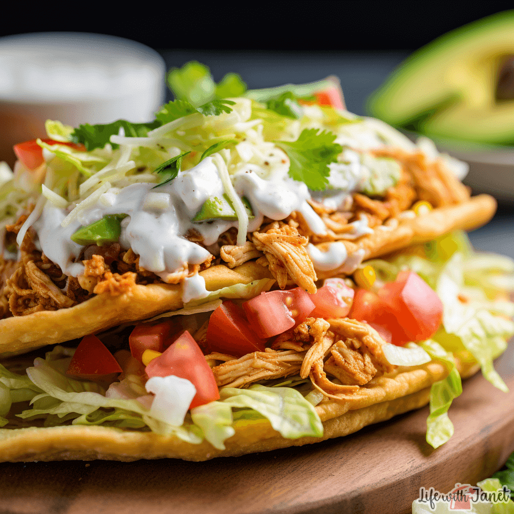

Description:
A Chicken Chalupa is a delightful Mexican-inspired dish that combines
crispy, chewy, and flavorful elements all in one bite. The chalupa shell is typically made
from masa dough, fried until golden brown and slightly crispy on the edges while remaining
soft in the center. It's then filled with tender, seasoned chicken, fresh vegetables, and
topped with creamy sauces or cheese for a satisfying and flavorful experience.
Ingredients
For the Chalupa Shells:
- 2 cups masa harina (corn flour)
- 1 1/4 cups warm water
- 1/2 teaspoon salt
- Oil for frying
For the Chicken Filling:
- 2 boneless, skinless chicken breasts
- 1 tablespoon olive oil
- 1 teaspoon cumin
- 1 teaspoon chili powder
- 1/2 teaspoon garlic powder
- Salt and pepper to taste
- 1/4 cup chicken broth
Toppings:
- Shredded lettuce
- Diced tomatoes
- Shredded cheese (cheddar or Mexican blend)
- Sour cream
- Guacamole
- Salsa
Steps
Prepare the Chalupa Shells:
- In a large mixing bowl, combine masa harina, salt, and warm water. Mix until
a soft dough forms.
- Divide the dough into 8 equal portions and roll each into a ball.
- Flatten each ball between two pieces of plastic wrap or parchment paper
using a tortilla press or a heavy skillet until they are about 1/4 inch thick.
- Heat oil in a deep skillet over medium heat. Once hot, fry each flattened
dough piece until golden brown and slightly crispy, about 2 minutes per side.
Drain on paper towels.
Cook the Chicken:
- Season the chicken breasts with cumin, chili powder, garlic powder, salt,
and pepper.
- Heat olive oil in a skillet over medium heat. Add the chicken breasts and
cook until browned on both sides, about 5-7 minutes per side.
- Pour in the chicken broth, cover the skillet, and simmer for another 10
minutes until the chicken is fully cooked and tender.
- Shred the chicken using two forks and set aside.
Assemble the Chalupas:
- Take each chalupa shell and layer it with a generous portion of shredded
chicken.
- Top with shredded lettuce, diced tomatoes, shredded cheese, sour cream,
guacamole, and salsa.
- Serve immediately and enjoy your homemade Chicken Chalupa!
This recipe gives you the perfect balance of crunch, savory chicken, and fresh toppings,
making it an excellent meal for any occasion.